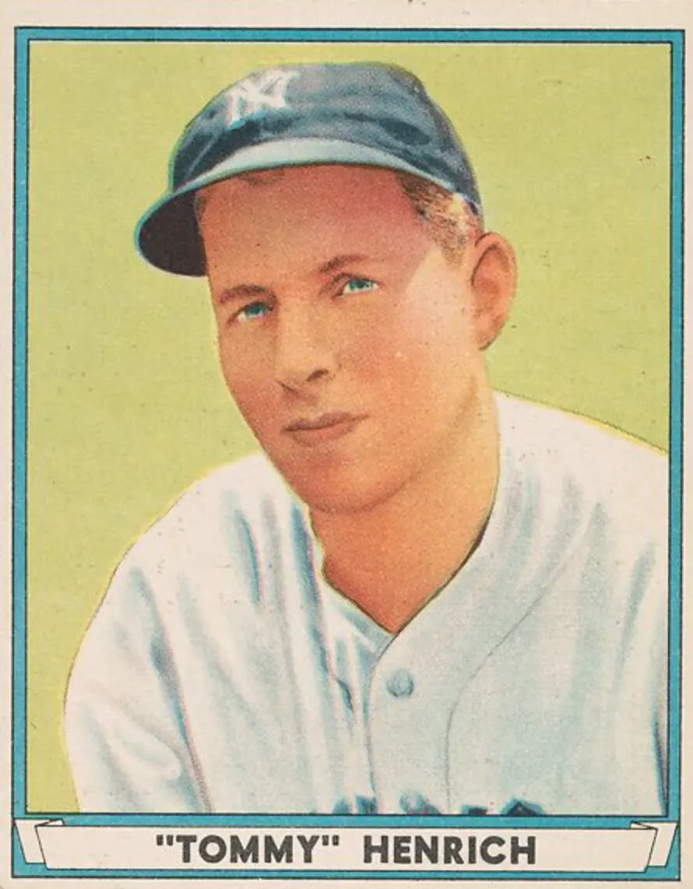
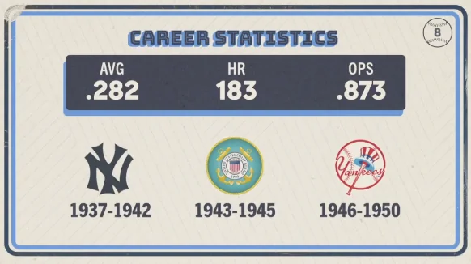

Tommy Henrich "Old Reliable"
Career Highlights & Facts
(Facts are AI-generated and may require verification)
- Known as 'Old Reliable' for his uncanny ability to deliver in the clutch, he was once described by a legendary teammate as the smartest player in the big leagues.
- He famously kept a historic hitting streak alive by sacrificing his own at-bat to move a runner into scoring position, ensuring his teammate would get another chance at the plate.
- He secured his place in history by hitting the first walk-off home run in World Series history, ending a tense scoreless duel in the opening game of the fall classic.
Would you like to find out more about Tommy Henrich?
Career Totals
| WAR | AB | H | HR | BA | R | RBI | SB | OBP | SLG | OPS | OPS+ |
|---|---|---|---|---|---|---|---|---|---|---|---|
| 39.4 | 4603 | 1297 | 183 | .282 | 901 | 795 | 37 | .382 | .491 | .873 | 132 |
Statistics via Baseball-Reference.com
The Original Clue
